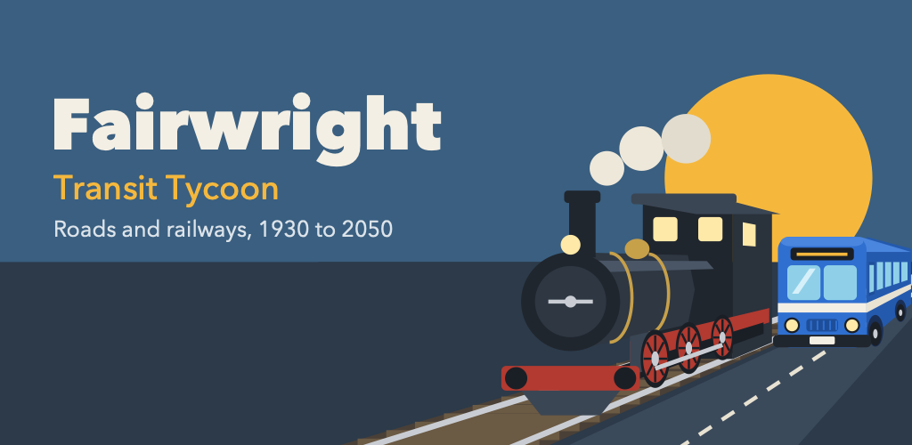
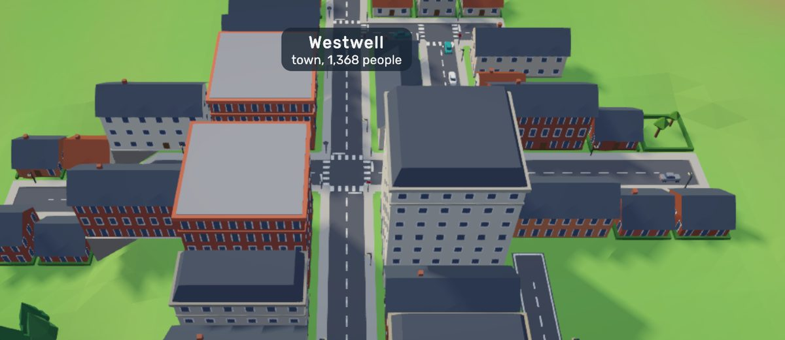
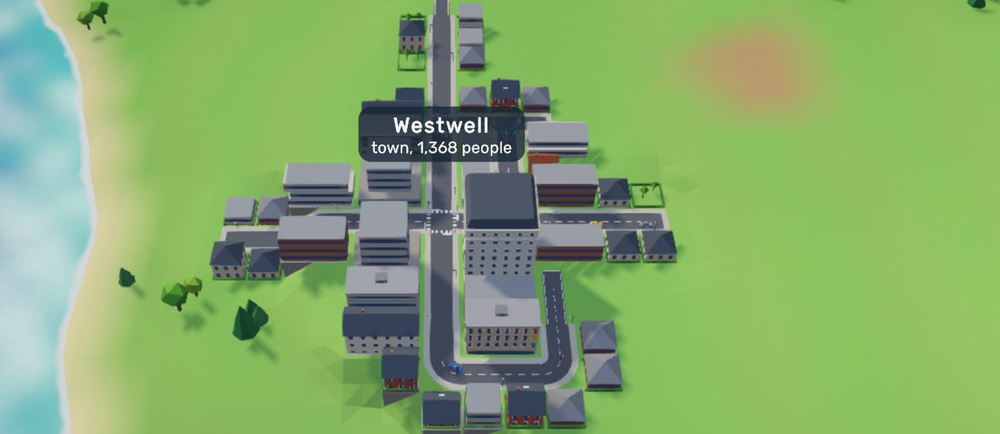
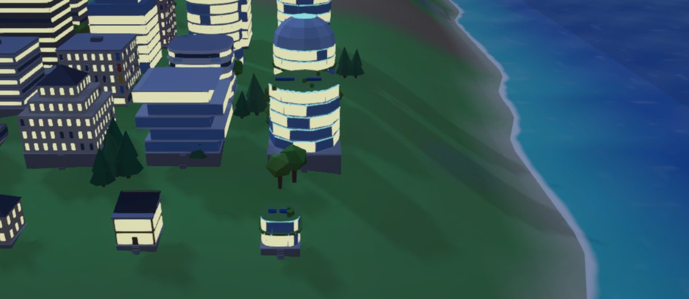
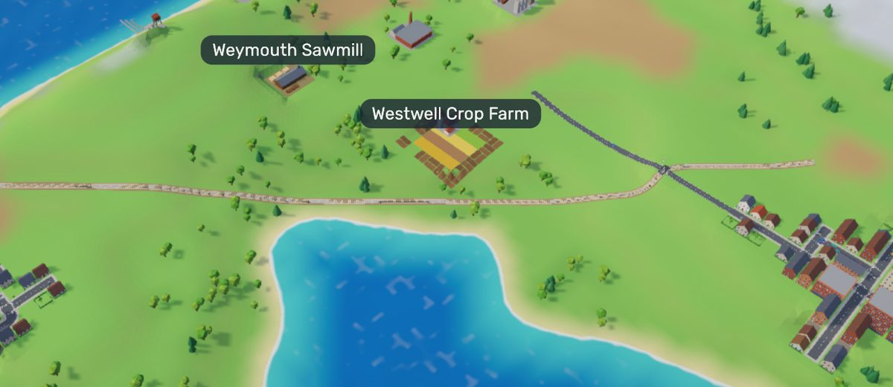

Roads and rail
Drag to build roads, track, bridges and tunnels. Plan bus, truck and train lines with a few taps.
Fairwright: Transit Tycoon is a transport tycoon made for your phone. Start in 1930 with a little money and a map of sleepy towns, and build the roads and railways that carry them into the future.

Drag to build roads, track, bridges and tunnels. Plan bus, truck and train lines with a few taps.
Serve a town well and it grows, from village to city to metropolis, street by street.
Coal, grain, wood, steel, food and goods: feed the factories and the towns that need them thrive.
Designed for phones from the start, with a guide and goals that teach you as you play.
From 1930 to 2050 and beyond. Steam gives way to diesel and electric, and towns change their look as the decades pass, a few buildings at a time.




Fairwright is in a closed beta on Google Play. Email us with the Google account you use on your Android phone and we'll send you an invite.